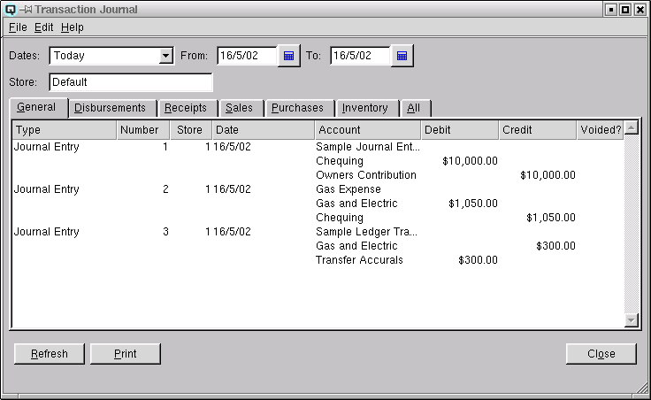

Transaction Journal
The transaction journal shows a journal of all or a select group of
transactions for a specified start and stop date. Using your mouse to
double click on a line entry in the table will display the actual
entry for viewing or editing.

Date Range
Select a date range to view.
From
Displays the start of the start date range to view.
To
Displays the end of the date range to view.
Store
Select the store to view. If blank all stores are displayed.
Transaction Folders
-
Transaction Table
-
- Type - Displays the type of transaction.
-
- Adjustment - transactions created from item adjustments
- Cheque - quick cheques or vendor payments
- Customer Invoice - transactions created from sales
- Customer Payment - transactions created from customer payments on account
- Customer Return - transactions created from customer returns
- Item Transfers - transactions created when items are transferred from one store to another
- Journal Entry - journal transactions created in the journal entry window
- Ledger Transfers - transactions created when ledger amounts are transferred from one store to another
- Nosale - nosales transactions created at the point-of-sale
- Payout - the payout of cash to pay an expense
- Shift Close - transactions created when a shift is closed
- Tender Exchange - transactions created when one tender is exchanged for another
- Vendor Claim - transaction created when claims are processed to a vendor
- Vendor Invoice - vendor invoices for the purchase of goods or services
- Withdraw - transactions created when a customer withdraws cash from their account
- Number - Displays the Id# of the transaction.
- Store - Displays the Id# of the transaction.
- Date - Displays the date the transaction us is posted to.
- Account - Displays the account affected by the posting.
- Debit - The amount of a debit to an account.
- Credit - The amount of a credit to an account.
- Voided? - Quasar Accounting displays a checkmark when the
transaction is voided.
Refresh
Clicking on refresh will refresh the data on the
screen.
Print
Select this function to print the contents of the screen to the printer.